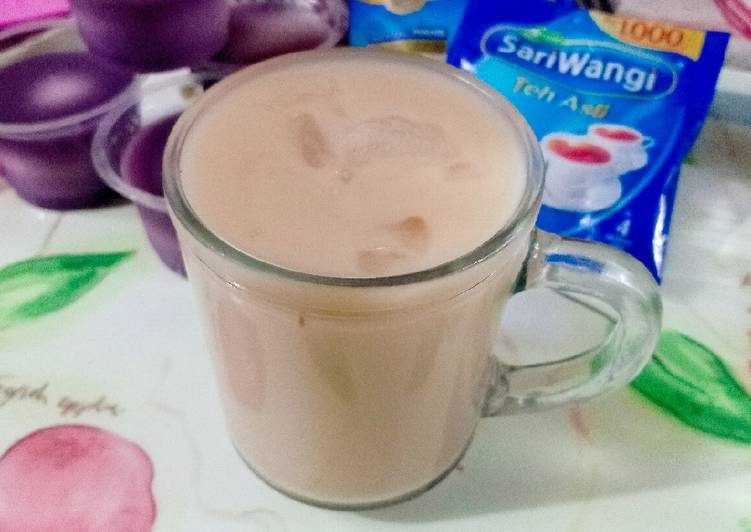

resep membuat Teh Susu
Kamu bisa menikmati Teh Susu yang nikmat dengan resep Teh Susu sederhana ini.
Bahan Teh Susu :
- 1 kantong teh celup
- 1 sachet susu kental manis putih
- Siapkan semua bahannya.
- Seduh teh dengan air panas, lalu tambahkan susu kental manis dan aduk rata.
- Tambahkan potongan es batu dan sajikan.